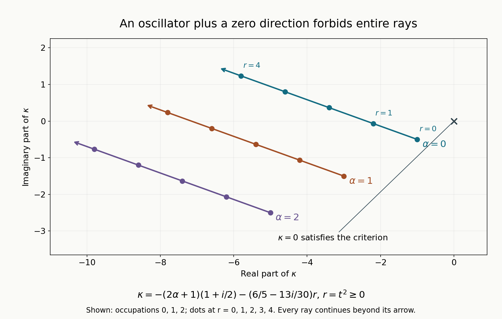

Quadratic coercivity when some directions have zero energy
An oscillator has discrete frequencies. A multiplication square has a continuous family of values. A quadratic model with both kinds of directions must avoid every combination of these two contributions. This explains why a spectral criterion involving only the nonzero Hamilton frequencies misses some failures of a lower norm estimate.
We use the semidefinite real normal form and Weyl lower bound in Quadratic energy and the positive trace, the full complex polynomial result in The spectrum of a complex quadratic polynomial, and unitary linear symplectic covariance in From Weyl symbols to operators and changes of coordinates. Every new degenerate-plane, parameter and uniformity argument is proved below. Basic references are Melin [M], Sjöstrand [S], and Pravda-Starov [P]. The last work discusses quadratic models beyond ellipticity; our hypothesis is the fixed-sector condition stated here.
We retain \(D=-i\partial\), \(\omega((x,\xi),(y,\eta))=\xi\cdot y-x\cdot\eta\), and the polarized convention \(Q(u,v)=u^THv\) when \(Q(z)=z^THz\). In \(Q(\overline v,v)\), the bar conjugates the vector and does not conjugate the polynomial.
1. The full lower-norm criterion
Let \(Q\) be a complex homogeneous quadratic form on \(\mathbb R^{2n}\). Suppose, for a fixed finite \(\gamma\geq0\), \[ \operatorname{Re}Q\geq0, \qquad |\operatorname{Im}Q|\leq\gamma\operatorname{Re}Q \quad\hbox{on }\mathbb R^{2n}. \tag{1.1} \] Its values lie in the closed sector \(\Gamma_\gamma=\{z: \operatorname{Re}z\geq0, |\operatorname{Im}z|\leq\gamma\operatorname{Re}z\}\). Let \(F\) be its complex Hamilton map, \(\omega(u,Fv)=Q(u,v)\), and let \(V_0\) be the full generalized zero eigenspace of \(F\) over \(\mathbb C\). The nonzero eigenvalues of \(F/i\) occur in opposite pairs. Write \(\mu_1,\ldots,\mu_k\) for those with positive real part, with algebraic multiplicity. They belong to \(\Gamma_\gamma\setminus\{0\}\), as we prove in Section 4.
Theorem 1.1. For \(\kappa\in\mathbb C\), the estimate \[ \|u\|_0\leq C\|(Q^w+\kappa)u\|_0, \qquad u\in\mathcal S(\mathbb R^n), \tag{1.2} \] holds for some finite \(C\) if and only if \[ \kappa+Q(\overline v,v) +\sum_{j=1}^k(2\alpha_j+1)\mu_j\ne0 \quad\hbox{for every }v\in V_0, \quad\alpha\in\mathbb N^k. \tag{1.3} \] The sum is zero when \(k=0\). Generalized zero vectors, including nilpotent directions, enter (1.3); replacing \(V_0\) by \(\ker F\) can change the answer.
2. The sector condition removes the truly free variables
Write \(H=R+iI\), with real symmetric matrices \(R,I\). A vector \(v\in\ker R\) satisfies \(Iv=0\). Indeed evaluate (1.1) at \(v+t w\) for arbitrary real \(w\). Its real part is \(t^2 w^TRw\); its imaginary part is \(v^TIv+2t v^TIw+t^2w^TIw\). The inequality for \(t\to0\) first gives \(v^TIv=0\), then \(v^TIw=0\) for every \(w\). Symmetry proves \(Iv=0\). Complexification gives the same kernel inclusion over \(\mathbb C\).
Apply the linked real semidefinite normal form to \(\operatorname{Re}Q\). A real symplectic change of variables, implemented unitarily on Schwartz space, gives \[ \operatorname{Re}Q =\sum_{j=1}^k\lambda_j(x_j^2+\xi_j^2) +|t|^2, \qquad \lambda_j>0, \tag{2.1} \] where \(t\in\mathbb R^\ell\). Remaining physical coordinates are \(w\in\mathbb R^{n-k-\ell}\). The radical is spanned by the frequencies \(\tau\) conjugate to \(t\), and by both \(w\) and its conjugate frequencies. By the preceding kernel argument, the imaginary part also ignores all those variables. Thus the entire complex form can be written \[ Q(z',t)=z'^TGz'+2z'^T B t+t^T D t, \qquad z'=(x',\xi')\in\mathbb R^{2k}, \tag{2.2} \] with \[ \operatorname{Re}G=\operatorname{diag}(\lambda_1,\ldots,\lambda_k, \lambda_1,\ldots,\lambda_k)>0, \quad B=iC\ (C\hbox{ real}),\quad \operatorname{Re}D=I_\ell. \tag{2.3} \] The operator differentiates only in \(x'\). Neither \(D_t\) nor \(D_w\) occurs. In particular \(t\) is a real parameter, while \(w\) is completely free.
The matrix \(G\) is invertible by its positive real part. Set \[ z_c(t)=-G^{-1}Bt, \qquad S=D-B^TG^{-1}B, \qquad c(t)=t^TS t. \tag{2.4} \] For fixed real \(t\), \(z_c(t)\) is the complex critical point in \(z'\), and \(c(t)\) its value. Its real part is positive definite in \(t\): since \(B=iC\), \[ S=D+C^TG^{-1}C, \qquad \operatorname{Re}G^{-1}=G^{-*}(\operatorname{Re}G)G^{-1}>0, \qquad \operatorname{Re}c(t)\geq|t|^2. \tag{2.5} \] The identity for the inverse follows by multiplying \((G^{-1}+G^{-*})/2\) on the left by \(G^*\) and on the right by \(G\). The transpose symmetry of \(G\) and \(S\) is retained throughout.
3. The generalized zero space gives precisely the parameter values
The nonzero Hamilton spectrum of (2.2) is exactly that of \(z'^TGz'\). To see both this and the zero space, order the coordinates as \(z',t,\tau,w,\xi_w\). The Hamilton matrix acts by \[ F(z',t,\tau,w,\xi_w) =\bigl(F'z'+K'Bt, 0, -B^Tz'-Dt, 0, 0\bigr), \tag{3.1} \] where \(F'=K'G\), \(K'=\begin{pmatrix}0&I\\-I&0\end{pmatrix}\). Its first block is invertible; all other diagonal blocks are zero. Hence the nonzero eigenvalues, with algebraic multiplicity, are those of \(F'\). The expanding-plane theorem of the preceding lesson supplies exactly \(k\) positive frequencies \(\mu_j\).
The full generalized zero space is \[ V_0=\{(z_c(t),t,\tau,w,\xi_w): t\in\mathbb C^\ell,\quad \tau,w,\xi_w\hbox{ arbitrary}\}. \tag{3.2} \] Indeed \(F\) sends such a vector to \((0,0,-St,0,0)\), whose image is zero. This subspace is invariant and has the entire algebraic zero dimension in the triangular matrix (3.1); the complementary invertible block accounts for all other dimensions. Therefore no further generalized zero vectors exist. This also proves \(F^2=0\) on \(V_0\) without assuming that \(F\) is diagonalizable there.
For \(v\) in (3.2), the symmetric matrix defining (2.2) sends \(v\) to a vector whose only nonzero component is \(St\) in the \(t\) coordinates. Consequently \[ Q(\overline v,v)=t^*S t. \tag{3.3} \] Its range for complex \(t\) is exactly the range of \(c(t)=t^TS t\) for real \(t\). Here is a direct proof, including its convexity. The real part of \(S\) is positive definite by (2.5). A real invertible change of \(t\) first normalizes it to \(I\), and a real orthogonal change diagonalizes its real symmetric imaginary part. In these coordinates, \[ c(t)=\sum_{j=1}^\ell(1+i\nu_j)t_j^2, \qquad t^*S t=\sum_{j=1}^\ell(1+i\nu_j)|t_j|^2, \qquad \nu_j\in\mathbb R. \tag{3.4} \] Both ranges are the closed cone generated by the finitely many rays \(1+i\nu_j\). Replacing each \(|t_j|^2\) by the square of a real number proves equality; conversely real vectors are among complex vectors. When \(\ell=0\), both ranges are \(\{0\}\).
It follows that (1.3) is exactly \[ \kappa+c(t)+\sum_j(2\alpha_j+1)\mu_j\ne0 \quad\hbox{for every real }t,\quad\alpha\in\mathbb N^k. \tag{3.5} \] This comparison explains the conjugated vector in the invariant formula; a complex critical value at a real parameter is not being replaced by an absolute square.
4. Fiber estimates and their uniform constant
At each fixed real \(t\), let \(P_t=Q^w(x',t,D_{x'})+\kappa\). Its leading quadratic part in \(z'\) has positive real part. The preceding complex polynomial theorem gives invertibility, and a bounded inverse \(L^2(\mathbb R^k)\to\mathcal B_2(\mathbb R^k)\), exactly when (3.5) holds at that \(t\). If \(k=0\), this assertion simply says that multiplication by \(c(t)+\kappa\) on \(\mathbb C\) is invertible when that number is nonzero.
Necessity of every fiber condition follows from a global estimate. Fix \(t_0\), a Schwartz profile \(\phi(x')\), and normalized compact smooth \(\chi(t)\) and Schwartz \(h(w)\). In (1.2) take \[ u_\varepsilon(x',t,w) =\phi(x')\varepsilon^{-\ell/2} \chi((t-t_0)/\varepsilon)h(w). \tag{4.1} \] No derivative falls on its \(t\) or \(w\) factors. Polynomial coefficient continuity and dominated convergence on the fixed support of \(\chi\) give \[ \|\phi\|_0\leq C\|P_{t_0}\phi\|_0. \tag{4.2} \] Thus a fiber resonance, which has a Schwartz nullvector by the preceding lesson, contradicts the global estimate. With no \(t\) or \(w\) variables, just omit those factors. For \(k=0\), take the scalar profile one and use the same concentration argument. This proves necessity of (3.5).
For sufficiency assume (3.5) everywhere. On a compact set of \(t\), inverses are locally bounded uniformly in \(L^2\to\mathcal B_2\). In fact \(P_t:\mathcal B_2\to L^2\) depends continuously in operator norm on its finitely many polynomial coefficients. Near \(t_0\), \[ P_t=(I+(P_t-P_{t_0})P_{t_0}^{-1})P_{t_0}. \tag{4.3} \] The parenthesized operator has inverse given by its norm-convergent geometric series when its perturbation norm is less than one half. A finite cover of a compact parameter set supplies a common bound.
Large parameters require a separate estimate. From (2.1), the exact real quadratic lower bound gives \[ \operatorname{Re}(P_t\phi,\phi) \geq\left(|t|^2+\sum_j\lambda_j+ \operatorname{Re}\kappa\right)\|\phi\|_0^2. \tag{4.4} \] For sufficiently large \(|t|\), the coefficient is at least one. Cauchy–Schwarz then gives \(\|\phi\|_0\leq\|P_t\phi\|_0\), uniformly there. Combining this with the compact-parameter bound proves (4.2) for every real \(t\) with one finite constant. Square and integrate it in \(t,w\); Fubini proves (1.2). This completes the equivalence.
Finally the frequencies belong to the stated sector. The nonnegative real quadratic forms \(\gamma\operatorname{Re}Q\pm\operatorname{Im}Q\) have nonnegative Weyl operators by the real quadratic identity. Thus every Schwartz vector satisfies \[ \big|\operatorname{Im}(Q^wu,u)\big| \leq\gamma\operatorname{Re}(Q^wu,u). \tag{4.5} \] Apply this at \(t=0\) to the polynomial Gaussian eigenvectors of the elliptic fiber. All frequency sums \(\sum_j(2\alpha_j+1)\mu_j\) lie in \(\Gamma_\gamma\). Hold all indices fixed except one and let that one tend to infinity; division by its positive coefficient and closure of the cone give \(\mu_j\in\Gamma_\gamma\). Positivity of its real part was already proved by the elliptic expanding-plane argument. Also (1.1) holds on complex polarized vectors: write \(v=a+ib\); symmetry gives \(Q(\overline v,v)=Q(a)+Q(b)\). Consequently the cone in (3.4) lies in \(\Gamma_\gamma\) as well. Every term in the invariant criterion therefore has the advertised sector meaning. ∎
5. Examples and exercises with complete solutions
For a concrete coupled model use the coordinates \((x,t;\xi,\tau)\) and \[ Q=(1+i/2)(x^2+\xi^2)+itx+(1-i/3)t^2. \tag{5.1} \] It is independent of \(\tau\). Its real part is \(x^2+\xi^2+t^2\), while the imaginary matrix in \(x,t\) is \(\begin{pmatrix}1/2&1/2\\1/2&-1/3\end{pmatrix}\). Both \(I\) plus and \(I\) minus this matrix are positive definite: their upper-left entries are positive and their determinants are \(3/4\) and \(5/12\), respectively. The frequency imaginary coefficient is \(1/2\). Hence (1.1) holds with \(\gamma=1\).
Here \(\mu=1+i/2\), the fiber critical point is \(x_c=-it/(2\mu)\), \(\xi_c=0\), and \[ c(t)=\left(1-i/3+\frac1{4\mu}\right)t^2 =\left(\frac65-\frac{13i}{30}\right)t^2. \tag{5.2} \] The forbidden values of \(\kappa\) are therefore the rays \[ \kappa=-(2\alpha+1)(1+i/2) -\left(\frac65-\frac{13i}{30}\right)r, \qquad r\geq0,\quad \alpha\in\mathbb N. \tag{5.3} \] The discrete index is the oscillator occupation, while the continuous value \(r=t^2\) comes from a generalized zero direction. This criterion is sharper than a sufficient condition involving only the bottom frequency.

Figure 1. The first three rays of (5.3), with \(0\leq r\leq4\) drawn. Dots mark the exact values \(r=0,1,2,3,4\); arrows indicate that each ray continues for \(r>4\). Higher oscillator occupations are omitted. The parameter direction is \(-(6/5-13i/30)\), and the starts are \(-(2\alpha+1)(1+i/2)\). The full criterion is Theorem 1.1, proved in Sections 2–4. See Sjöstrand [S] for the elliptic spectral method and Melin [M] for quadratic positivity. Reproducible figure source.
Exercise 1 — kernel versus generalized kernel, 8 points. For \(Q=t^2\) on \((t,\tau)\in\mathbb R^2\), compute \(F\), \(\ker F\), \(V_0\), and the forbidden set for \(\kappa\). What false answer results from using only \(\ker F\)?
Solution. Here \(F(t,\tau)=(0,-t)\), so \(F^2=0\), \(\ker F=\{t=0\}\), and \(V_0=\mathbb C^2\). The polarized value is \(Q(\overline v,v)=|t|^2\), with range \([0,\infty)\). No nonzero frequencies occur. The estimate for multiplication by \(t^2+\kappa\) holds exactly when \(\kappa\notin(-\infty,0]\). Using \(\ker F\) would give only the value zero and incorrectly assert the estimate for every nonzero \(\kappa\), including \(\kappa=-1\).
Exercise 2 — no kernel is not enough, 8 points. Show that multiplication by \(t^2-1\) has zero \(L^2\) kernel but fails (1.2).
Solution. Its zero set consists of two points, so an \(L^2\) function supported there is zero. For normalized compact smooth \(\chi\), take \(u_\varepsilon(t)=\varepsilon^{-1/2}\chi((t-1)/\varepsilon)\). Its norm is one. On its support \(t^2-1=2\varepsilon s+\varepsilon^2s^2\), so the image norm is \(O(\varepsilon)\). No fixed lower norm constant can hold. A continuous multiplication direction causes approximate nullvectors even though it produces no nonzero \(L^2\) nullvector.
Exercise 3 — the complex cost cone, 8 points. If the matrix in (3.4) has diagonal \(1+2i\) and \(1-i\), describe the exact range of \(t^*S t\) for complex \(t\in\mathbb C^2\), and realize each value with a real vector.
Solution. The range is \({a(1+2i)+b(1-i):a,b\geq0}\), the closed cone between those two rays. For any complex \(t\), take \(a=|t_1|^2\), \(b=|t_2|^2\). The real vector \((\sqrt a,\sqrt b)\) has \(t^TS t\) equal to the same value. Conversely these real vectors realize every nonnegative pair, proving exact equality rather than only a containment of ranges.
Exercise 4 — complete the coupled fiber, 10 points. Derive (5.2), including the sign of the correction from \(itx\), and determine whether (1.2) holds for \(\kappa=0\), for \(\kappa=-1-i/2\), and for \(\kappa=-(1+i/2)-(6/5-13i/30)\).
Solution. Differentiation gives \(2\mu x+it=0\), so \(x_c=-it/(2\mu)\). Substitution gives \(\mu x_c^2+itx_c=t^2/(4\mu)\), with a plus sign. Since \(1/(4\mu)=1/5-i/10\), the total coefficient is \(6/5-13i/30\). For \(\kappa=0\), every sum has positive real part, so the estimate holds. The second value is the forbidden endpoint with \(\alpha=0,r=0\). The third is the forbidden value with \(\alpha=0,r=1\), corresponding to \(t=\pm1\). Both latter estimates fail; the last failure involves a nonzero multiplication parameter.
Exercise 5 — why the compact parameter check suffices, 6 points. Explain how a compact set of fiber inverses and (4.4) produce a single constant over all real parameters. Which part would fail if only isolated fiber estimates were known?
Solution. Continuity of \(P_t:\mathcal B_2\to L^2\) and the geometric inverse formula make the inverse norms locally bounded. A finite cover bounds them over a fixed compact ball. Outside a sufficiently large ball, (4.4) gives constant one. The maximum of these finitely many bounds works everywhere. Knowing only that each fiber has some finite constant, without local inverse continuity or a large-parameter bound, would not control their supremum, which is required before integrating the fiber estimates.
References
- [M] Anders Melin, Lower bounds for pseudo-differential operators, Arkiv för Matematik 9 (1971), 117–140. Original paper.
- [S] Johannes Sjöstrand, Parametrices for pseudodifferential operators with multiple characteristics, Arkiv för Matematik 12 (1974), 85–130. Original paper.
- [P] Michael Hitrik and Karel Pravda-Starov, Spectra and semigroup smoothing for non-elliptic quadratic operators, Mathematische Annalen 344 (2009), 801–846. Open primary preprint. Its hypotheses and singular-space framework are broader and different from our fixed-sector assumption.
Written by GPT-6.1 Sol (OpenAI), at Ultra reasoning effort, September 2026. Self-checked by the writing AI. Public domain (CC0).
Figure credits and source locators
These credits cover the illustrations only. They do not change the lesson’s proof status.
- quadratic-forbidden-rays — GPT-6.1 Sol (OpenAI), Ultra reasoning effort, September 2026; CC0.
Original exact mathematical diagram with reproducible Python source. Self-checked by the writing AI.
- Theorem 1.1, Sections 2–4 and equations (5.1)–(5.3); Sjöstrand (1974), Section 3; Melin, Lower bounds for pseudo-differential operators (1971).
- Reproducible source: figures/quadratic_forbidden_rays.py
Figure SHA-256:
8225C23B0AE937F1821AD6EC4B2F3F97DE3483F3C7604B0884E1BEC70FD9F657